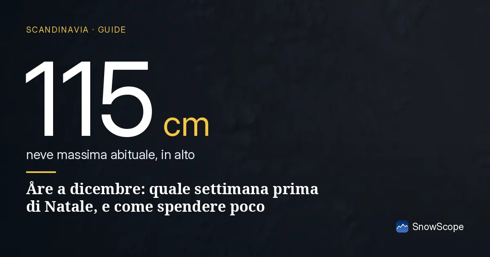

Åre a dicembre: quale settimana prima di Natale, e come spendere poco
Åre si trova in alto sopra il lago Åresjön con 116 km di piste e 928 m di dislivello. La storia della neve di 46 inverni mostra un pattern chiaro per dicembre: la seconda metà del mese accumula una base affidabile, mentre la prima settimana è incerta. A mezza montagna (853 m) la neve è buona solo nel 61% dei primi Decembri, ma nell'89% dei casi a metà mese.
Le previsioni neve in tempo reale per Åre nell'app SnowScopeAltezza neve, allerte powder e mappa 3D, gratis.
Quando andare: i numeri
La neve a dicembre ad Åre cresce costantemente durante il mese. A mezza montagna, la percentuale di inverni con 30 cm o più sale dal 61% nel 1-7 dicembre, al 76% nell'8-14 dicembre, poi all'89% nel 15-21 dicembre e raggiunge il picco del 93% nella settimana di Natale.
Il periodo ideale per una vacanza economica è il 15-21 dicembre. Hai probabilità di neve simili al Natale senza il sovrapprezzo natalizio sugli skipass e gli alloggi. Un tipico 15 dicembre ha 40 cm a mezza montagna, abbastanza per sciare in sicurezza sulla maggior parte delle piste.


Costo: skipass e timing
Åre usa prezzi dinamici per gli skipass, fissati per data tramite il negozio online ufficiale. Questo significa che le settimane tranquille costano meno delle settimane festive. La prima settimana di dicembre e i giorni tra Natale e Capodanno sono i più cari; la settimana del 15-21 dicembre è in una zona più calma.
Prenota l'alloggio e lo skipass insieme intorno alla settimana scelta, non il contrario. La prenotazione online anticipata di entrambi ti dà il massimo controllo su quello che spendi.
Quota: variazioni meno marcate del previsto
Il terreno di Åre si estende da 389 m a 1318 m, ma la neve di dicembre non cambia tanto con la quota quanto nelle stazioni alpine. Un tipico 15 dicembre la base ha 34 cm, mezza montagna 40 cm e la vetta 46 cm. La vetta è più ventosa, quindi l'altitudine extra non sempre significa più neve al suolo.
Quello che è cambiato nel tempo è l'affidabilità in vetta. La sua media di dicembre è scesa da 69 cm negli inverni degli anni 80 e 90 a 36 cm negli ultimi inverni. Mezza montagna ha subito perdite simili: la percentuale di settimane natalizie con 30 cm è scesa dal 100% all'80%. La base è rimasta più stabile.
L'inverno scorso e il cambiamento a lungo termine
La stagione 2025-26 ha dato 40 cm a mezza montagna il 15 dicembre e 33 cm il 24 dicembre. Era nella media degli ultimi anni ma sotto la mediana dei 46 inverni di 49 cm in vetta la Vigilia di Natale. La neve scarsa all'inizio della stagione è comune ormai.
La neve di dicembre ad Åre è stata più leggera negli ultimi 15 inverni rispetto agli anni 80 e 90. La settimana natalizia a mezza montagna ora ha 30 cm solo nell'80% degli inverni, contro il 93% storicamente. Pianifica una settimana tipica di metà mese, non per neve profonda.
Alternative: Vemdalsskalet e quando guardare altrove
Vemdalsskalet, più a sud nell'Härjedalen, è un'opzione più piccola e tranquilla. La sua neve di dicembre è più scarsa: 33 cm a mezza montagna il 15 dicembre, e solo il 63% degli inverni raggiunge 30 cm nella settimana del 15-21 dicembre. I suoi prezzi sono anche dinamici senza una tariffa fissa pubblicata.
A dicembre, Åre offre neve più affidabile e terrain molto più vasto a prezzi simili. Se hai bisogno di certezza per una settimana fissa all'inizio di dicembre, guarda verso nord-ovest in direzione delle montagne norvegesi o svedesi più alte. Da gennaio in poi, Vemdalsskalet diventa un valore migliore.
In montagna: vento, luce e valanghe
I giorni di dicembre sono corti. Pianifica la tua sciata attorno alla luce disponibile, e dirigiti verso le piste inferiori e riparate nei giorni ventosi. La vetta è esposta; le raffiche possono pulire la neve dai pendii più alti anche quando mezza montagna sembra stabile.
Prima di andare fuori pista, controlla l'ultimo bollettino valanghe svedese da Lavinprognoser. La neve all'inizio della stagione può posarsi male su quello che sottostà.
Consigli per sciatori
- Prenota la settimana del 15-21 dicembre: l'89% dei 46 inverni registrati ha avuto 30 cm o più a mezza montagna quella settimana, contro solo il 61% nella prima settimana.
- Compra gli skipass online e fuori dal periodo festivo (1-7 dicembre e 24-31 dicembre). La determinazione dei prezzi dinamici premia la prenotazione anticipata in date tranquille.
- Aspettati neve a mezza montagna intorno a 40 cm in un tipico giorno di metà dicembre. La base ha meno, la vetta un po' di più, ma il vento può cancellare quella differenza.
- Nei giorni ventosi resta sul terreno inferiore e riparato. La vetta è esposta e la neve spesso viene soffiata dal vento.
- Leggi il bollettino valanghe svedese prima di sciare fuori pista, specialmente all'inizio della stagione quando la neve nuova si posa su una base debole.
Su questi numeri
Le altezze neve delle località sono la neve più alta sui pendii superiori alla data indicata; sono stime per un'area, non una misura in un punto. Le previsioni possono cambiare. Leggi sempre il bollettino valanghe ufficiale prima del fuoripista.
Bollettini valanghe ufficiali: Lavinprognoser (Naturvårdsverket)
Cita questo articolo
Per ricerca, didattica o stampa: numeri e grafici sono liberamente riutilizzabili con licenza CC BY 4.0 citando così.
SnowScope (2026), Åre a dicembre: quale settimana prima di Natale, e come spendere poco, https://snowscope.app/blog/it/2026/11/are-december-skiing-sweden-price-snow.html, consultato il 2026-11-14
SnowScope (Atlas Labs). (2026, November 14). Åre a dicembre: quale settimana prima di Natale, e come spendere poco. SnowScope snow reports. https://snowscope.app/blog/it/2026/11/are-december-skiing-sweden-price-snow.html
BibTeX
@misc{snowscope2026aredecemberskiingswedenp,
author = {{SnowScope (Atlas Labs)}},
title = {Åre a dicembre: quale settimana prima di Natale, e come spendere poco},
year = {2026},
month = nov,
howpublished = {\url{https://snowscope.app/blog/it/2026/11/are-december-skiing-sweden-price-snow.html}},
note = {Published 2026-11-14 12:34 UTC; accessed 2026-11-14}
}· CC BY 4.0 · Metodi, dati e strumenti →
Åre: neve e temperatura per quota, quest'inverno vs lo scorso (strumenti) →
Segui Åre
Gratis: un messaggio quando arriva la neve e il meteo ogni mattina.